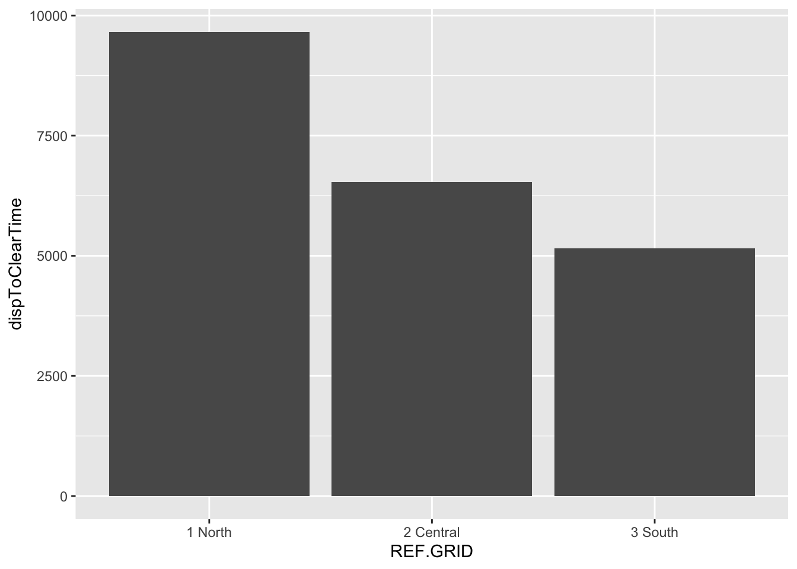
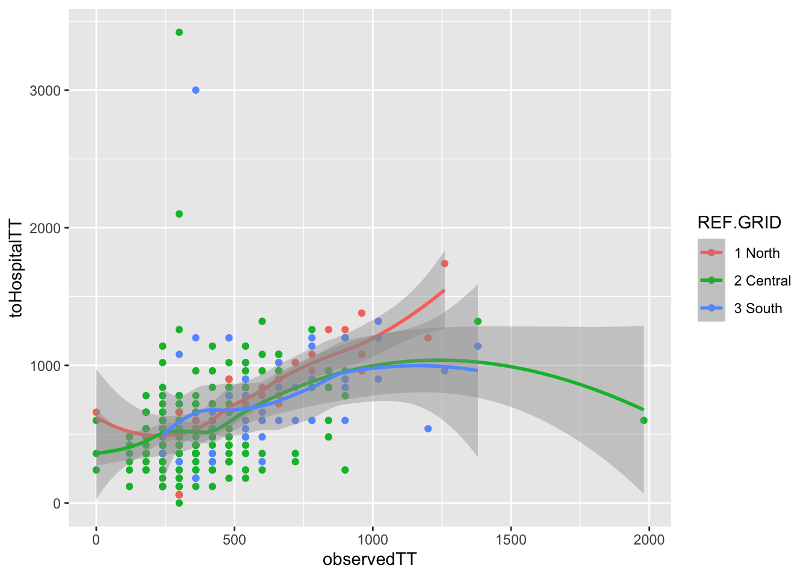
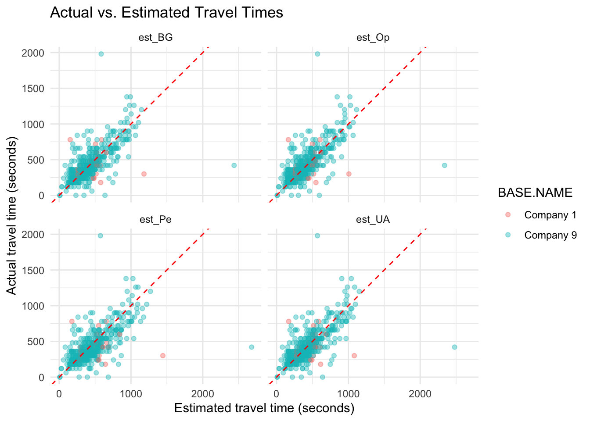
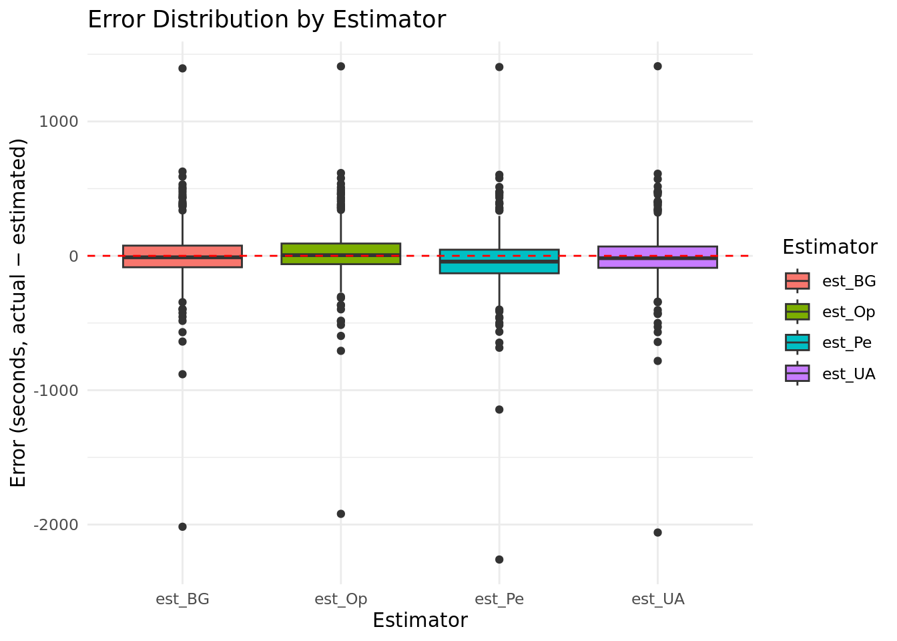
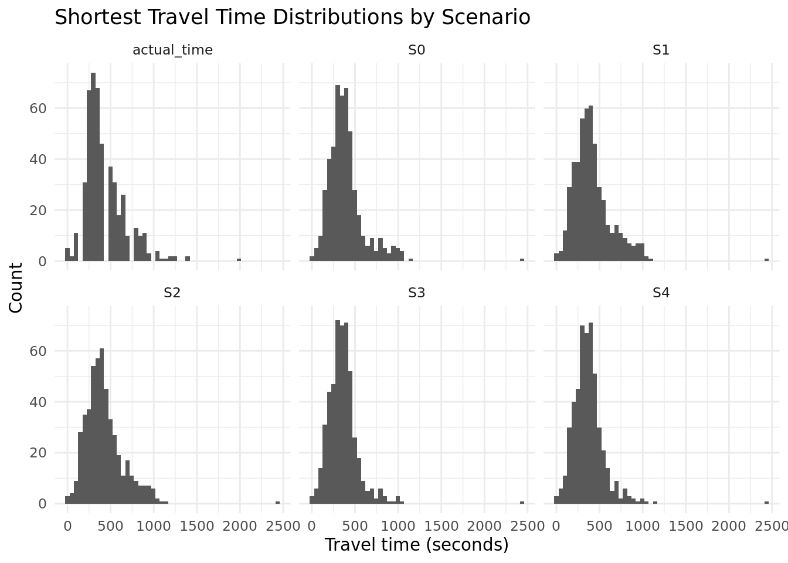
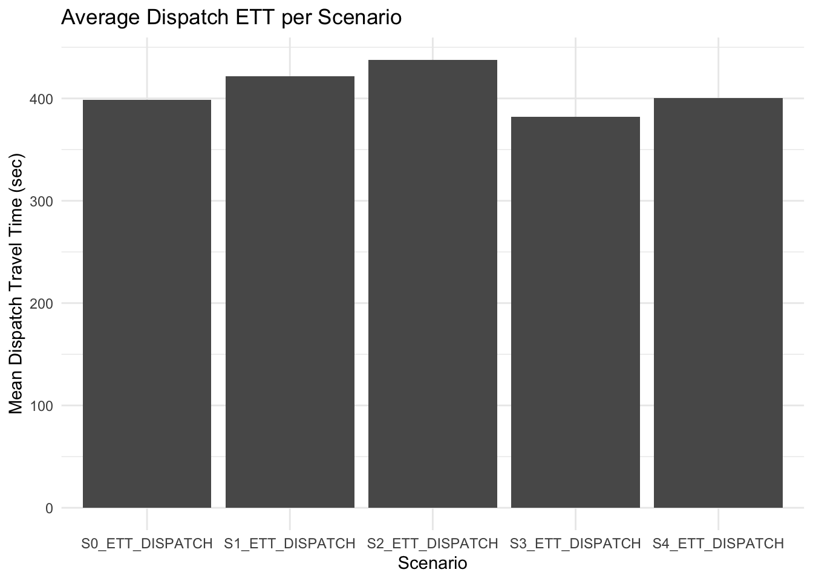

Don't know how to automatically pick scale for object of type <difftime>.
Defaulting to continuous.
`stat_bin()` using `bins = 30`. Pick better value with `binwidth`.
Warning: Removed 2 rows containing non-finite outside the scale range
(`stat_bin()`).
Warning in geom_histogram(stat = "identity", position = "dodge"): Ignoring
unknown parameters: `binwidth`, `bins`, and `pad`
Don't know how to automatically pick scale for object of type <difftime>.
Defaulting to continuous.

# difference in travel time (station to scene vs. scene to hospital)ggplot(x,aes(x=observedTT,y=toHospitalTT,color=REF.GRID))+geom_point()+geom_smooth()
Don't know how to automatically pick scale for object of type <difftime>.
Defaulting to continuous.
Don't know how to automatically pick scale for object of type <difftime>.
Defaulting to continuous.
`geom_smooth()` using method = 'loess' and formula = 'y ~ x'
Warning: Removed 160 rows containing non-finite outside the scale range
(`stat_smooth()`).
Warning: Removed 160 rows containing missing values or values outside the scale range
(`geom_point()`).

#difference in travel time ()ggplot(x,aes(x=atHospitalDur,y=REF.GRID,color=DISPATCH.PRIORITY.NAME))+geom_boxplot()
Don't know how to automatically pick scale for object of type <difftime>.
Defaulting to continuous.
Warning: Removed 160 rows containing non-finite outside the scale range
(`stat_boxplot()`).
ggplot(act_est, aes(x = est_time, y = actual_time, color = BASE.NAME)) +geom_point(alpha =0.4) +geom_abline(slope =1, intercept =0, linetype ="dashed", color ="red") +facet_wrap(~ Estimator) +labs(title ="Actual vs. Estimated Travel Times",x ="Estimated travel time (seconds)",y ="Actual travel time (seconds)" ) +theme_minimal()
Warning: Removed 64 rows containing missing values or values outside the scale range
(`geom_point()`).

act_est <- act_est |>mutate(error = actual_time - est_time)ggplot(act_est, aes(x = Estimator, y = error, fill = Estimator)) +geom_boxplot() +geom_hline(yintercept =0, linetype ="dashed", color ="red") +labs(title ="Error Distribution by Estimator",y ="Error (seconds, actual − estimated)",x ="Estimator" ) +theme_minimal()
Warning: Removed 64 rows containing non-finite outside the scale range
(`stat_boxplot()`).

Comparing scenarios
# S0: Central + Southx$S0 <-pmin(x$eTT.UA.Ce, x$eTT.UA.So, na.rm =TRUE)# S1: Central + Near Northx$S1 <-pmin(x$eTT.UA.Ce, x$eTT.UA.NN, na.rm =TRUE)# S2: Central + Far Northx$S2 <-pmin(x$eTT.UA.Ce, x$eTT.UA.FN, na.rm =TRUE)# S3: Central + South + Near Northx$S3 <-pmin(x$eTT.UA.Ce, x$eTT.UA.So, x$eTT.UA.NN, na.rm =TRUE)# S4: Central + South + Far Northx$S4 <-pmin(x$eTT.UA.Ce, x$eTT.UA.So, x$eTT.UA.FN, na.rm =TRUE)
# shortest ETT regardless of system loadshortest_ett <- x |>select(S0, S1, S2, S3, S4, actual_time) |>pivot_longer(cols =everything(),names_to ="scenario",values_to ="time" )ggplot(shortest_ett, aes(x = time)) +geom_histogram(position ="identity", bins =50) +labs(title ="Shortest Travel Time Distributions by Scenario",x ="Travel time (seconds)",y ="Count",fill ="Scenario" ) +theme_minimal() +facet_wrap(~scenario)
Warning: Removed 16 rows containing non-finite outside the scale range
(`stat_bin()`).

Consider System load (dispatch rule)
# order in dispatch timex <- x |>arrange(DT.DISP)# build availability matrixavail_matrix <-outer(x$DT.DISP, x$DT.AVAILABLE, FUN ="<")avail_matrix[upper.tri(avail_matrix, diag =TRUE)] <-FALSE
dispatch_scenario <-function(x, avail_matrix, scenario_caps, ett_map, label) {# scenario_caps: named vector of capacities, e.g. c(South=1, Central=3, NN=2)# ett_map: named vector of column names in x giving ETTs for each station n_calls <-nrow(x) used_station <-rep(NA_character_, n_calls) dispatch_ett <-rep(NA_real_, n_calls)for (i inseq_len(n_calls)) {# reset station availability for this call avail_veh <- scenario_caps# check conflicts with earlier calls conflict_cols <-which(avail_matrix[i, ])if (length(conflict_cols) >0) {for (j in conflict_cols) { st <- used_station[j]if (!is.na(st)) { avail_veh[st] <- avail_veh[st] -1 } } }# choose station with shortest ETT among those with capacity left min_ett <-Inf best_station <-NAfor (st innames(scenario_caps)) {if (avail_veh[st] >0) { ett_val <- x[[ett_map[st]]][i]if (ett_val < min_ett) { min_ett <- ett_val best_station <- st } } } used_station[i] <- best_station dispatch_ett[i] <- min_ett } x[[paste0(label, "_station")]] <- used_station x[[paste0(label, "_ETT_DISPATCH")]] <- dispatch_ettreturn(x)}
plot_data <- x |>pivot_longer(cols =starts_with("S") &ends_with("ETT_DISPATCH"),names_to ="Scenario",values_to ="ETT") |>mutate(ETT_min = ETT /60)plot_data |>group_by(Scenario) |>summarise(mean_ETT =mean(ETT, na.rm =TRUE)) |>ggplot(aes(x = Scenario, y = mean_ETT)) +geom_col() +labs(title ="Average Dispatch ETT per Scenario",y ="Mean Dispatch Travel Time (sec)", x ="Scenario") +theme_minimal()

ggplot(plot_data, aes(x = ETT)) +geom_histogram(bins =30) +facet_wrap(~ Scenario) +labs(title ="Histogram of Dispatch ETT by Scenario",x ="Dispatch Travel Time (sec)", y ="Count") +theme_minimal()
To enable caching of data, set `options(tigris_use_cache = TRUE)`
in your R script or .Rprofile.
options(tigris_use_cache =TRUE)vance_data <-counties(state ="NC", year =2024, class ="sf") |>filter(GEOID =="37181")x_modified <- x |>mutate(obsTTmodified =as.numeric(observedTT, units ="mins"))coords_df<-st_as_sf(x_modified, coords =c("REF.GPS.LON","REF.GPS.LAT"), crs =4326, remove =FALSE) |>st_transform(st_crs(vance_data))road_df <-roads(state ="NC", county ="Vance", year =2024, class ="sf")plot_save <-ggplot() +geom_sf(data = vance_data, fill =NA, color ="black", linewidth =0.5) +geom_sf(data = road_df, color ="grey80", linewidth =0.2) +geom_sf(data = coords_df, aes(color = obsTTmodified), size =1.8) +scale_color_viridis_c(name ="Observed EMS Travel Time (minutes)", na.value ="grey80") +coord_sf(xlim =st_bbox(vance_data)[c("xmin","xmax")],ylim =st_bbox(vance_data)[c("ymin","ymax")], expand =FALSE) +labs(title="Observed Travel Times of Vance County EMS in minutes")+theme_minimal(base_size =12) +theme(panel.grid.major =element_blank(),axis.title =element_blank(), axis.text =element_blank(), axis.ticks =element_blank())ggsave("vance_county_ems_observedtravel.png", plot_save, width =7, height =7, dpi =300)
Static Map Plot Emergency/Non Emergency
library(dplyr)library(sf)library(ggplot2)library(tigris)options(tigris_use_cache =TRUE)vance_data <-counties(state ="NC", year =2024, class ="sf") |>filter(GEOID =="37181")#x_modified <- x |># mutate(obsTTmodified = as.numeric(observedTT, units = "mins"))coords_df<-st_as_sf(x_modified, coords =c("REF.GPS.LON","REF.GPS.LAT"), crs =4326, remove =FALSE) |>st_transform(st_crs(vance_data))road_df <-roads(state ="NC", county ="Vance", year =2024, class ="sf")plot_save <-ggplot() +geom_sf(data = vance_data, fill =NA, color ="black", linewidth =0.5) +geom_sf(data = road_df, color ="grey80", linewidth =0.2) +geom_sf(data = coords_df, aes(color = DISPATCH.PRIORITY.NAME), size =1.8) +coord_sf(xlim =st_bbox(vance_data)[c("xmin","xmax")],ylim =st_bbox(vance_data)[c("ymin","ymax")], expand =FALSE) +labs(title="Urgency of Vance County EMS Calls",color="Urgency Level")+theme_minimal(base_size =12) +theme(panel.grid.major =element_blank(),axis.title =element_blank(), axis.text =element_blank(), axis.ticks =element_blank())ggsave("vance_county_ems_urgency.png", plot_save, width =7, height =7, dpi =300)
ggplot(x,aes(x=REF.GRID,fill=DISPATCH.PRIORITY.NAME))+geom_histogram(stat="count",position ="dodge")+labs(title="Emergency/Non-Emergency EMS Calls by Region (Counts)",x="Count",y="Region")
Warning in geom_histogram(stat = "count", position = "dodge"): Ignoring unknown
parameters: `binwidth`, `bins`, and `pad`